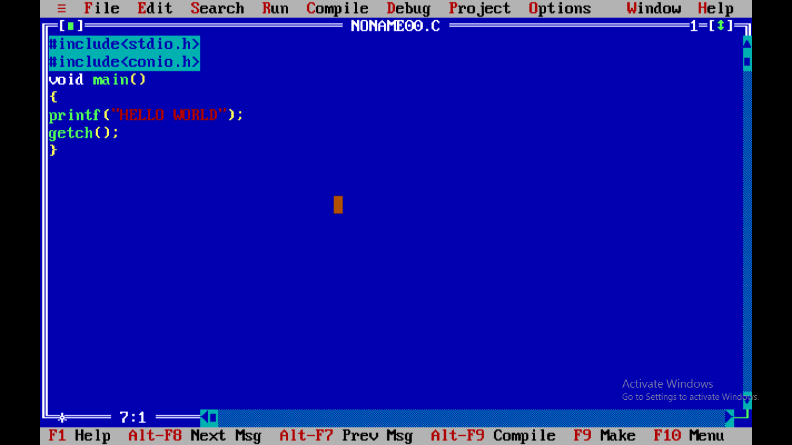

First C Program
Before starting the abcd of C language, you need to learn how to write, compile and run the first c program.
To write the first c program, open the C console and write the following code:

#include includes the standard input output library functions. The printf() function is defined in stdio.h .
int main() The main() function is the entry point of every program in c language.
printf() The printf() function is used to print data on the console.
return 0 The return 0 statement, returns execution status to the OS. The 0 value is used for successful execution and 1 for unsuccessful execution.
How to compile and run the c program
There are 2 ways to compile and run the c program, by menu and by shortcut.
By menu
Now click on the compile menu then compile sub menu to compile the c program.
Then click on the run menu then run sub menu to run the c program.
By shortcut
Or, press ctrl+f9 keys compile and run the program directly.
You will see the following output on user screen.